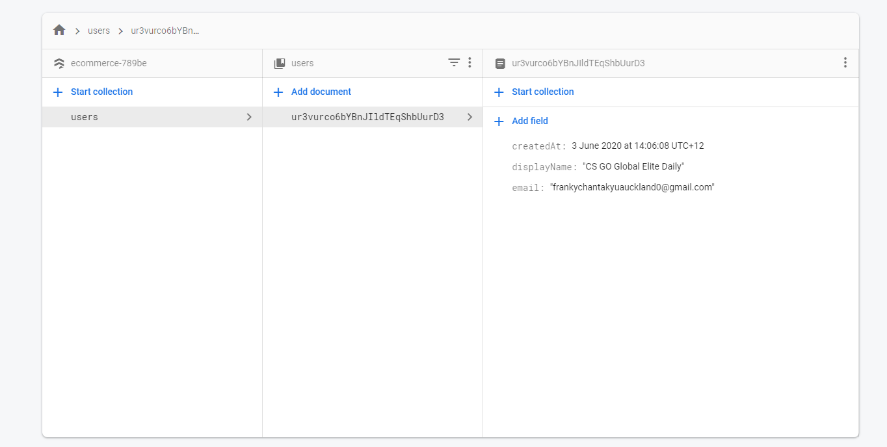
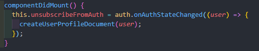
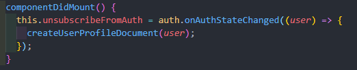
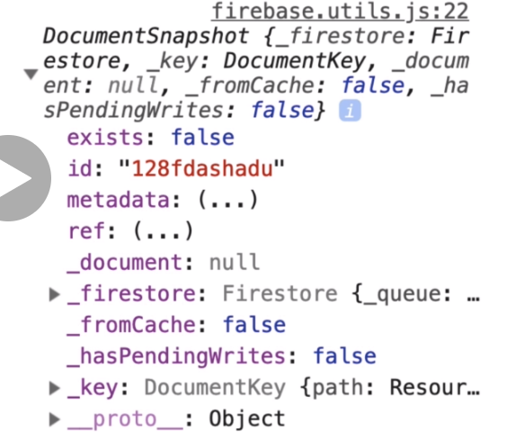
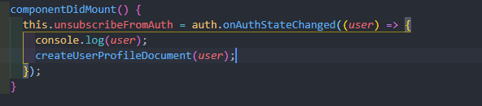
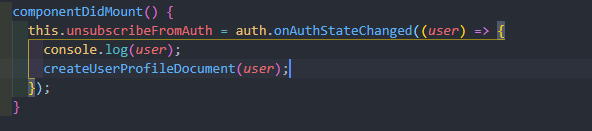

firestore - database
Workflow -> userObj -> queryReference obj -> snapshot obj
How to get data from firestore?
FireStore data is stored in a structure consisted with collection and document (just like record).
 

How to get data from firestore
1. firestore.doc() since we are getting the document from the firestore (middle column in the first image)
2. userAuth -> userAuth is my custom variable which contains the user obj that we get from onAuthStateChanged(). (image 2)
3. userAuth.uid -> uid is the unique identifier that resides in the user obj.


userRef will be returned even though the target resource doesn't exist. > >Detail data for the resource is captured by using CRUD operation that will return a snapshot obj.
4. userRef -> Querying the firestore will return a documentReference obj that also inclues that data of the parent. (CollectionReference: user (in this case))
DocumentReference Obj allows us to perform CRUD operation to the firestore database using get(), set() etc.
5. snapshot -> It returned by the CRUD operation to the DocumentReference obj. It includes the data of the target resource. How to set data?
We create a function in firebase module to set firestore's user data.
 

CRUD operation needed to perform with async await (userRef.get() set())
Left: We create a function in firebase module to set firestore's user data.
Right: userAuth obj will be passed to the function as the argument 'userAuth', and the additionalData is not yet defined here.
1. If the userAuth is undefuned -> return, since we have nothing to set in firestore.
2.If snapShot is not exist -> then we create profile in the firestore.